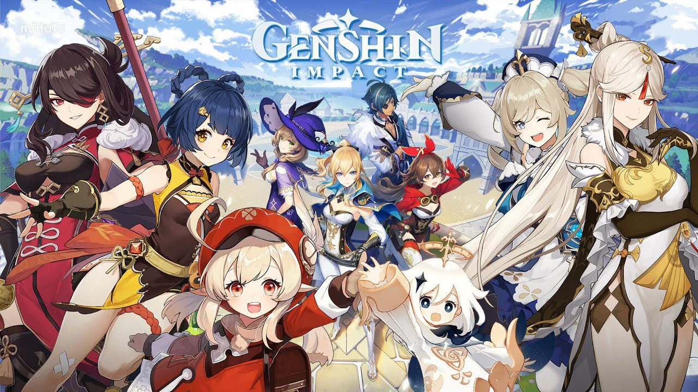
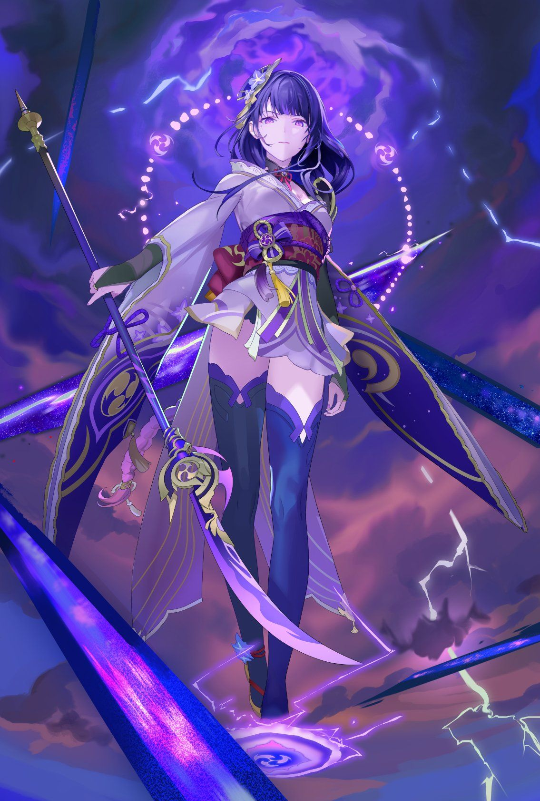
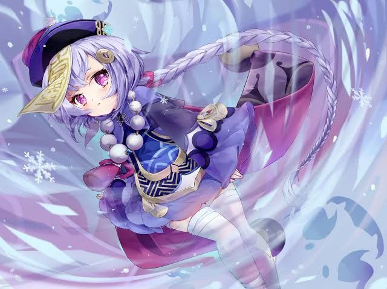
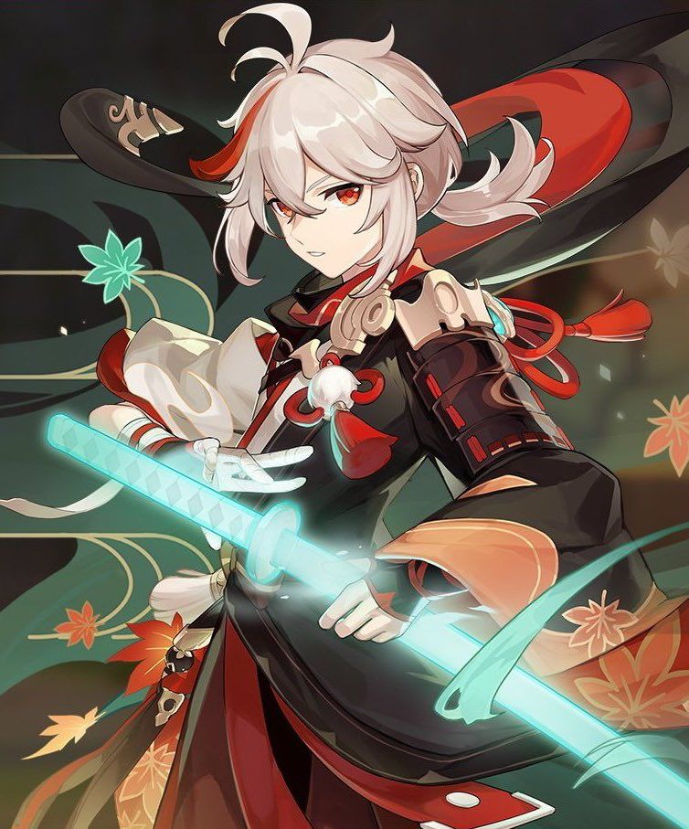
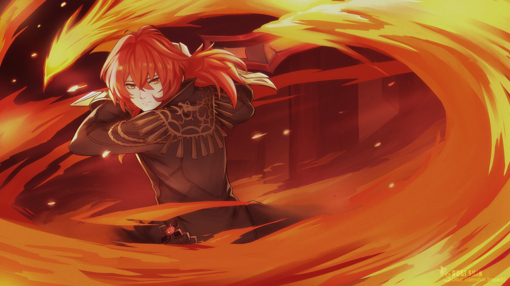
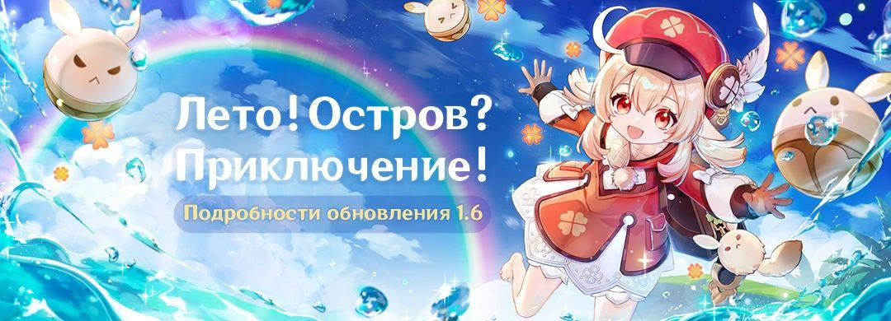
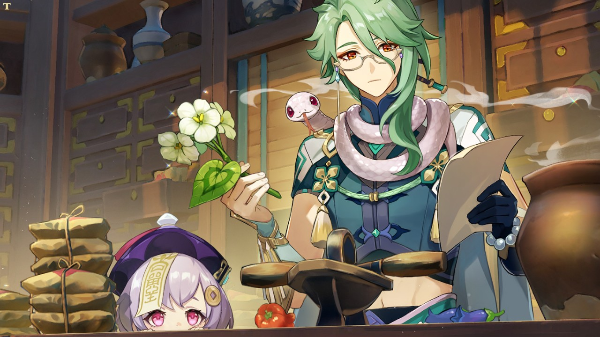

Genshin Impact
Genshin Impact - увлекательная игра с красочным миром и захватывающей историей. На данном сайте, вы немного болешь узнаете про нее.
Сюжет игры
Главные герои - близнецы Итэр и Люмин. Во время путешествия между мирами они попадают под атаку божества, в результате чего одного из близнецов похищают. Игрок, который будет играть pа близнеца, просыпается в мире Тейвата и встречает таинственную Пай мон, которая помогает ему начать поиски пропавшего брата/сестру. Они отправляются в путешествие по разным регионам в поисках подсказок и помощи других персонажей. В ходе приключений протагонист знакомится с представителями разных народностей и фракций. Постепенно выясняется, что Тейват находится под угрозой, а близнецы являются ключевыми фигурами в предотвращении грядущей катастрофы.
Мои любимые персонажи
В игре большое разнообразие играбельных персонажей, все они прекрасны, но к сожалению, в отряд можно выбрать только четверых. И вот одна из моих любимых сборок
Райден Сегун
Райден Сёгун - могущественная Архонт Электро и верховная правительница Инадзумы. Очень удобный персонаж, так как наносит большой урок от атак и ульты, а так же накладывает дополнительные эффекты на мобов, которые будут наносить дополнительный урон, даже если Райден не будет на игровом поле, но имеет малое количество зздоровья. по этому не может быть основным атакующим.
Ци Ци
Маленая милая Ци Ци отлично дополняет могущественную Райден. Не смотря на свой внешний вид, Ци Ци самый лучший лекарь Тейвата, способная хилить весь отряд одновременно и накладывать эффеты холода, которые хорошо сочетаются с дополнительными эффектами Райден. Совместимость доп. эффетов называется реакцией, наносящей огромный урон по мобам
Каэдэхара Кадзуха
Кадзуха так же является основной поддержкой. Благодаря своей стихией ветра, он может распространить реакцию на большую область, задевая всех мобов вокруг. Так же очень полезень в путешествии, ведь может благодаря своим способностям взлетать на небольшую высоту, преодолевая препятствия.
Дилюк Рагнвиндр
Дилюк - сильнейший двуручник в Монштате. В отряде будет основным нападающим. Имеет большой урок как в физическом плане, так и в магии. Единственный минус - это долгий откат ульты.
Ивенты
В игре проходит множество праздников, на которых можно получить приятные подарки и воспоминания. Регион, в котором проходит праздник, красиво украшают, создавая сказачную атмосферу.
Вот несколько ивентов:
Лето! Остров? Приключение!
Летнее событие, которое будет происходить на отдельном острове, состоящее из множества испытаний и загададок. За выполнение всех заданий можно будет приобрести несколько красивых костюмов на Джин и Барбару.
а так же получить много круток, но о них будет рассказано позже.
Лекарства и травы
Во время события необходимо приготовить 3 лекарства, добавляя в котелок необходимые ингредиенты по указаниям рецептов Бай Чжу, чтобы награды.
Молитвы
В игре есть временные баннеры, называемые молитвами, длятся они около месяца. В них можно получить пятизвездочного любимого персонажа, так как в таких баннерах можно получить либо ивентового персонажа или проиграть гарант и получить стандартную легу.

Но выбирать, что крутить надо тщательно! Ведь после завершения события, этот персонаж не будет выпадать в других баннерах.
чтобы совершить 1 крутку нужно потратить 160 примогемов. При этом есть несколько видов круток: ивентовые и стандартные.